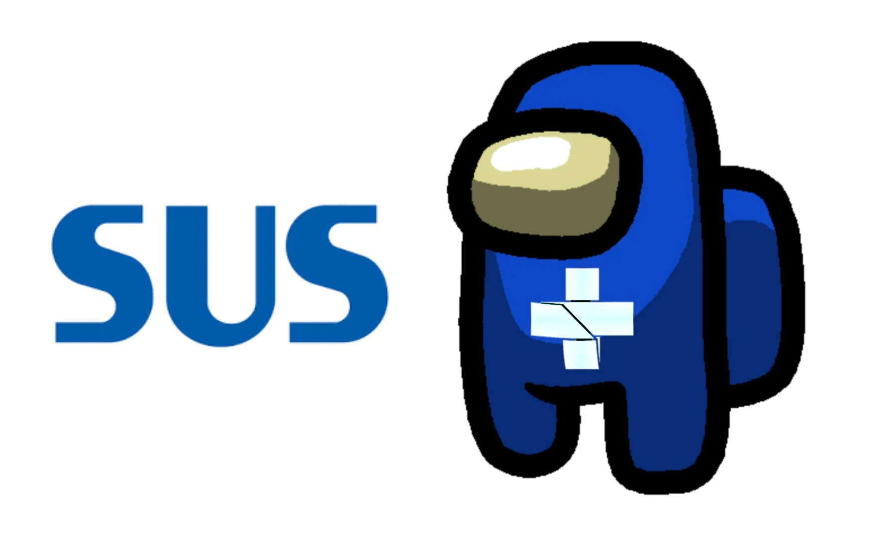

Jogador confunde o sistema do SUS com Among Us
O jogador entusiasta de Among Us, Enzo, encontrou-se em uma situação inusitada durante uma jogatina onde descobriu o verdadeiro signficado do "Sus" dentro do jogo.
A confusão veio pela forma simplificada como jogadores de Among Us chamam outros jogadores de "Suspeitos", utilizando as três primeiras letras da palavra, o que acaba confundindo novos jogadores desinformados, que relacionam essa simplificação com as siglas do Sistema Único de Saúde (SUS)
Em sua declaração viral no Twitter, Enzo explica sua situação. "Como assim 'sus' que ficam falando no Among Us não é do sistema único de saúde? Eu achava que estavam me chamando de doente esse tempo todo", declarou Enzo em redes sociais.
Apesar de ser mais um Enzo passando por uma situação não tão inusitada, sua postagem sobre o assunto gerou uma grande movimentação na rede social do Twitter, tendo mais de 2 bilhões de visualizações.